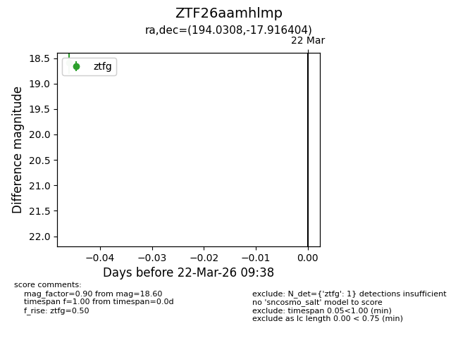
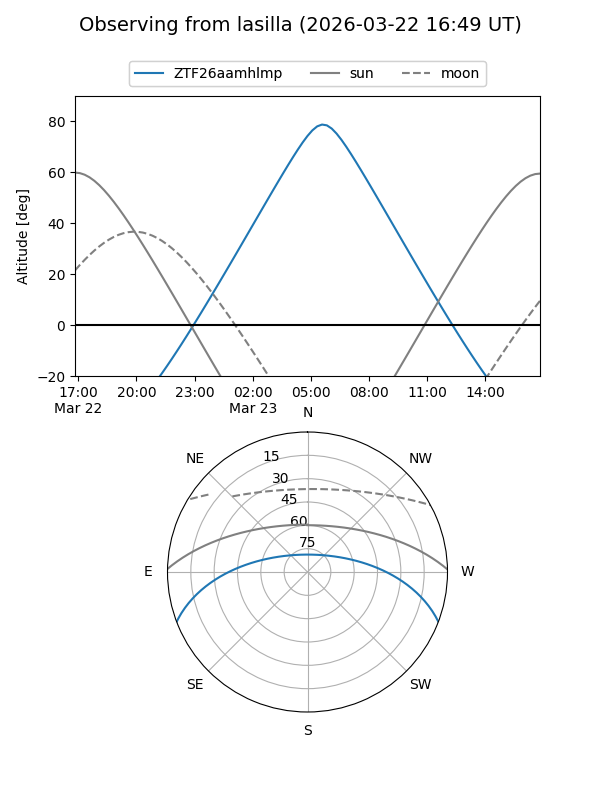
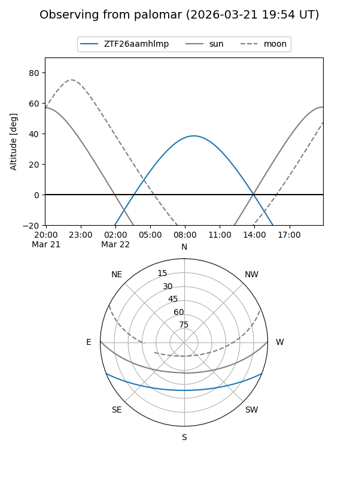

ZTF26aamhlmp
Target ZTF26aamhlmp at 2026-03-22 09:40
Aliases and brokers:
FINK: link
Lasair: link
ALeRCE: link
alt names
ZTF26aamhlmp (ztf,fink_ztf)
Coordinates:
equatorial (ra, dec) = 194.0308,-17.91640
equatorial (HMS+DMS) = 12:56:07.39,-17:54:59.05
galactic (l, b) = (304.5065,+44.94102)
Flags:
Photometry:
last ztfg=18.60
1 ztfg detections
Lightcurve

Visibility


Additional plots